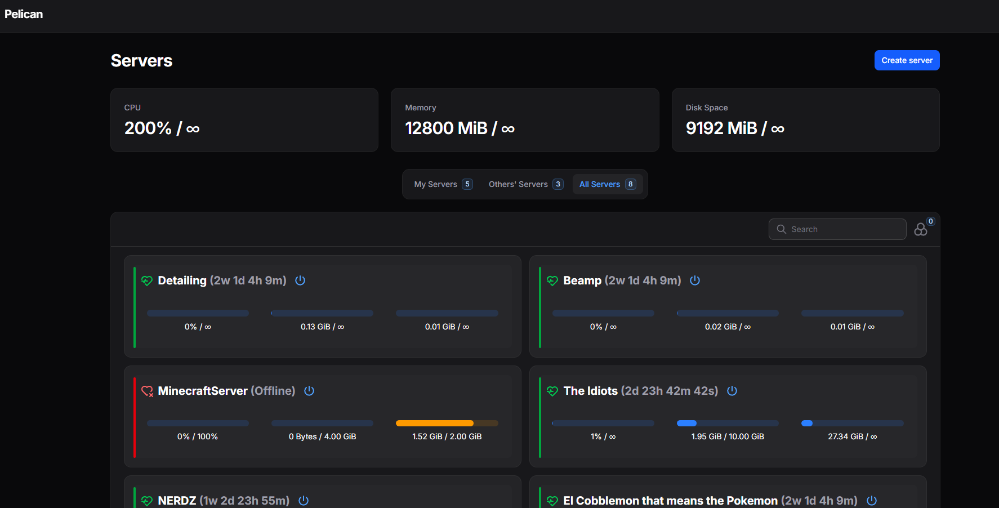

Games, tools, and builds from school to my own.

A top-down pixel art city builder where you run an 1890s mining company. You hire and fire workers, build out your town, and keep everyone productive through a closed scrip economy. Happy miners cost more but keep operations running smoothly. Unhappy ones slow down, start fights, and can even kill each other. The goal is to balance costs and morale to build the most efficient mining colony you can. Under the hood, each miner runs on a state machine (working, resting, injured, committing crimes, fired) with happiness and crime risk calculated from weighted stat formulas. Hiring generates each miner's trust, efficiency, and resilience from a budget pool scaled by their wage. Pathfinding uses Godot's navigation system with RVO avoidance so miners move through the town without colliding.
A self-hosted game server platform running on my homelab, built on the Pelican panel. Each user gets a resource budget that I set, and they can spin up as many servers as they want as long as they stay within it. No more setting up every server by hand. New servers are automatically assigned a port so they can be joined from anywhere, and users can create databases that come preconfigured and ready to use out of the box. A self-hosted email system notifies users when their account is created, when a server is deployed, and when announcements go out. I also extended the panel with plugins for live player counts and server-wide announcements, and handle all deployment and resource management on my own hardware.